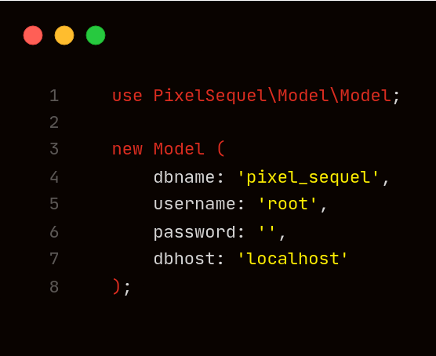

Pixel
Sequel
Home
Docs
Contribution
No matter what you may have heard, simplicity matters
PixelSequel is a lightweight, easy to use PHP ORM for MySQL databases. It is designed to be simple and easy to use, while still providing the power and flexibility of a full ORM.
Get Started
Contribute
It starts in your commandline
cd my-project-name
echo ' { "minimum-stability" : "dev" } ' > composer.json
composer require astianmuchui/pixelsequel
Elegant and easy to use

Read the docs
Quickly Handle CRUD Operations
Read the docs